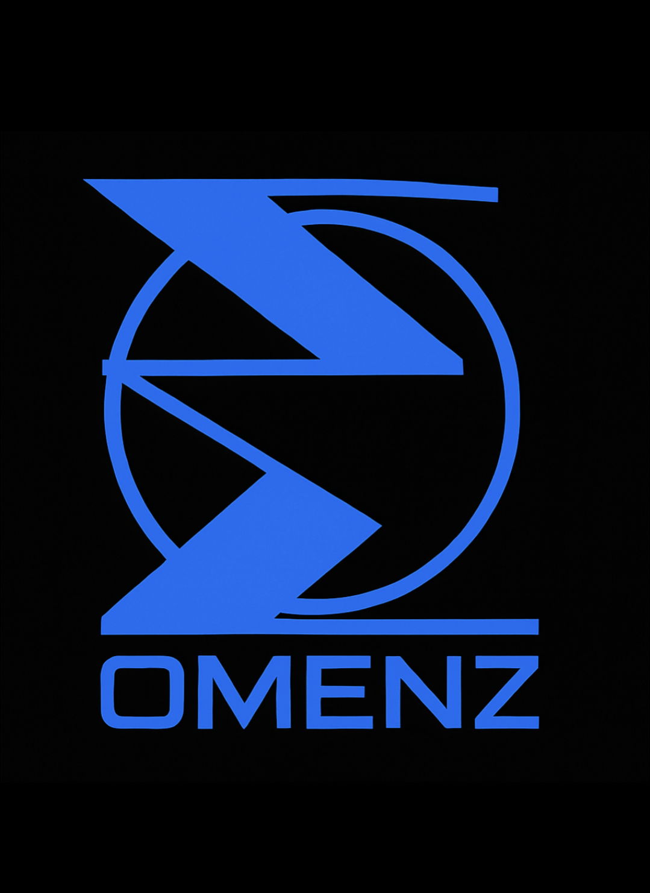

Structured Digital Education & Consulting
OMENZ is a structured digital education and consulting organization focused on helping individuals understand and navigate modern digital systems responsibly. Our work centers on digital literacy, operational structure, AI workflow education, and governance-first learning.
OMENZ is currently expanding its digital education framework and public-facing resources. More information, educational materials, and communication options will be added soon.